Above are home-brew live streams of two wild-caught honeybee colonies that I keep in the Philly suburbs. Below you'll find some notes, pictures, videos, and information about my suburban beekeeping.
I also log environmental sensor data in and around the beehives, including weight of the hive, using some custom hardware in the hive platform, and track bee activity using a convolutional neural network that watches the stream.
Use the headers above to switch between the two hives; the (load metrics) links below will let you view the live data; and you can expand sections with clickable section headers to view previous updates.
Hive One during August 2024. This colony made it to 2025!
Scout bees were checking out the swarm lure towards the end of April 2024. Eventually a swarm arrived and was re-homed May 2, 2024 into an 8-frame deep hive box - Hive One - with some pre-drawn comb from 2023's colony.
Hive One is doing well, and weekly inspections indicate steady brood rearing and a healthy queen throughout the active season. The original deep box was full as of June 16, and an empty medium box was added so the bees can stockpile for the winter. A third box was added towards the end of July 2024. A fourth box went on early in September 2024 to wrap up the season, but heavy drought conditions in the area resulted in very little honey produced, so this box was removed early October 2024. Oxalic acid treatments for Varroa mites starting after they were housed in May 2024 and repeated roughly every two months, most recently October 28, 2024, indicate mites are in check as we head into Winter. This combined with plenty of honey stores (more on that below) give Hive One good odds to survive the winter.
As of the end of January 2025 the bees are doing well. On days above 50F, they will start to engage in cleaning behavior, carrying off dead bees and other refuse. Dead bees out front may appear to be a bad sign, but only strong colonies will maintain a clean hive inside. With only 10 lbs of the 70+lbs of winter stores consumed, and the worst of winter likely past, I and the bees will start to prepare for spring with mite treatments as the weather warms and the resumption of brood rearing.
The 2024 colony appears to have made it through the winter as of March 1, 2025. A mite treatment at the end of February revealed very few mites in the hive (only 3 dead observed). The bees will start to forage on plants in bloom whenever the temperature approaches the low 50s Fahrenheit. This early in the season, that will be Witch Hazel and Crocus, and you might see bees bring back a darker and lighter colored pollen corresponding to these two plants. As March leads into April the variety will increase.
Temperature in the brood chamber spiked to 90F around February 25, 2025, indicating the bees were preparing for the queen to lay the first new bees since last Fall. Once the temperature is warm enough, a hive inspection will confirm the presence of brood and see if the development is consistent with eggs laid around that time. As of March 9, I've yet to do a thorough hive inspection, but the bees have been bringing back a lot of pollen. Also on March 9, the entrance reducer was set to its larger setting to help with the traffic jam at the smaller setting.
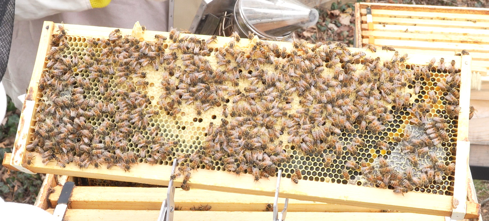
A medium frame from the 2025 colony in Hive One.
Starting at a total weight of 120-140 lbs at the end of last Fall (~70 lbs of honey, depending on when you start counting: Nov or Oct) the bees exited the winter with 100 lbs total hive weight as of March 10. That indicates a consumption of around 20 lbs of honey over the winter, which is quite a bit less than I've been lead to believe bees consume. From March 10 onward, the hive weight has been increasing with bee forage activity, up to around 110 lbs nearing the end of March. This should prove interesting to watch over the summer as well.
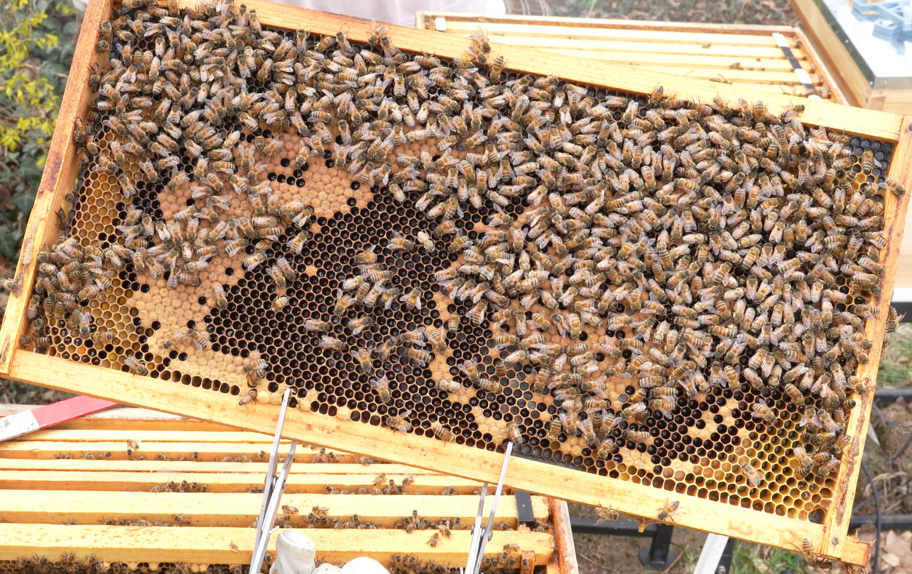
A deep frame from the 2025 colony in Hive One.
On March 22, 2025 a hive inspection reveals lots of capped brood, new eggs, and larva, with every indication that a round of bees had already started hatching. The deep box on the bottom had laying on the central six (of eight) frames, and the second medium had some brood on the inner two to four (one side) frames. Some drone brood was observed, but no queen cells, yet. As it takes around 21 days for a bee egg to hatch, these observations fits well with a timeline of the Queen starting laying just before March. Regular checks of the bottom board revealed wax cap debris consistent with hatching bees over the several days leading up to this inspection, which leads me to believe the temperature spike in February was a decent indicator of new spring brood.
Update - 4/18
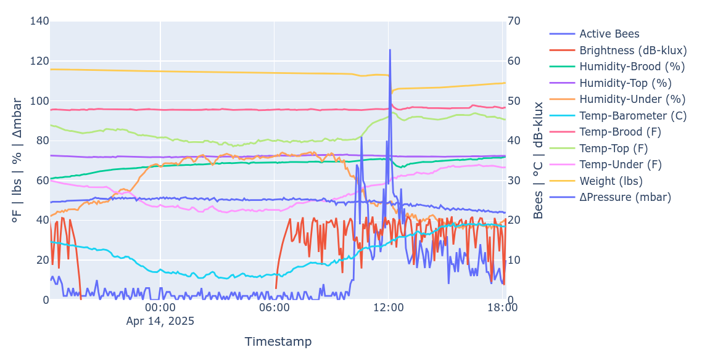
A plot of hive sensor data around the time of the swarm.
On April 15, 2024 the queen bee that overwintered decided it was time to increase the number of bee colonies in the world.
This process involves the worker bees preparing several new queens in special cells by feeding the growing larva in that cell special food containing hormones that stimulate the growth of a queen bee.
Once these new queens are nearly ready to hatch, the old queen will leave the hive with a large fraction of the available flying bees as a swarm to find a new home.
I caught this on the cameras setup to monitor the hive and you can find the videos here.
The plot on the right shows a seven pound drop in hive weight at the big spike in bee activity when the swarm departed — a pretty big swarm, very likely to establish a successful new hive.
The new queens will hatch around a week after this swarm leaves, and have a battle royale to be the new queen of the existing, well established, hive.
If one happens to hatch first, her odds are very good.
Some time after that, I should start seeing new eggs being laid, indicating a successful colony reproduction.
Update - 4/19
A second swarm popped out of hive one this morning, prompting me to do a full disassembly and inspection to see how many queen cells we are dealing with.
The result? Too many! Generally a second swarm so soon after the first indicates a very congested hive, and indeed Most cells in the hive were either full of honey or capped brood, and the box was full of bees.
Some dozen or so queen cells capped, uncapped, and ready to cap were present, along with what seemed to be a young queen.
This young queen remains in hive one, with roughly half the hive's resources, and one viable queen cell as an insurance policy.
Approximately four other queen cells were moved to hive two with half of hive one's resources and bees, splitting the colony in two to simulate a successful swarm.
We'll monitor both hives over the next several weeks to see that the queen mates successfully and starts to lay new eggs.
Update - 5/10
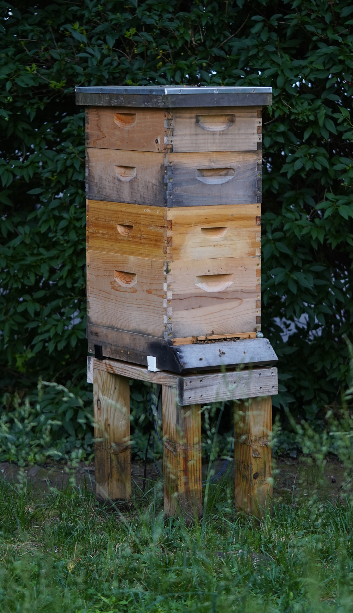
Hive One with 3 nearly full supers in early June 2025. Custom XL entrance reducer for an XL hive.
A full hive inspection revealed brood at all stages, including some recently capped (last several days), indicating the queen started laying around 12-15 days ago.
That roughly corresponds to 7-10 days after she hatched, assuming she was freshly hatched in the days leading up to or shortly after April 19th's swarm.
Pretty fast for a new queen, as it can apparently tale up to 3-4 weeks in some circumstances.
On top of a laying queen, a mite treatment during the brood break revealed a small mite load of around 10 dead Varroa mites.
Ultimately that means at least half of the split from the 19th is in good shape, and will establish itself well in Hive One.
The empty frames in the bottom box were nearly fully drawn during the inspection, and second medium box on top was added a week earlier, noting the weight was trending high.
They've put on around 30lbs of honey and bees since the split!
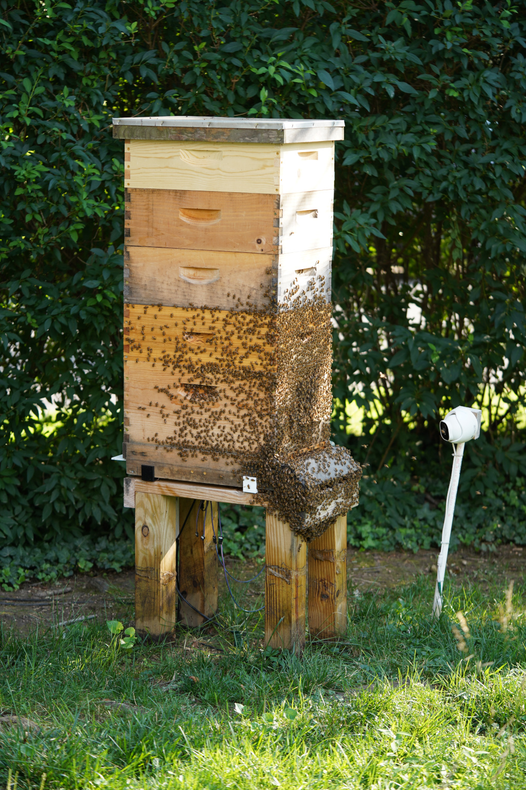
Hive One with 4 nearly full supers in late June 2025. So much honey!
Update - 6/8
A medium super ends up holding about 30 lbs of honey and wax, with it and its frames weighing 12 lbs.
Rapid growth of the colony in the good weather mid May led to a nearly full hive again around May 23 at 133 lbs, and another medium super went on taking it to 145 lbs.
After a week, all comb in that new super was drawn, and by this inspection June 8, the third super was nearly full, nearing 170 lbs.
Since the hive is full of bees and doing quite well, at the next inspection, at least one new super will go one, and perhaps one or two will come off for harvesting.
Update - 7/13
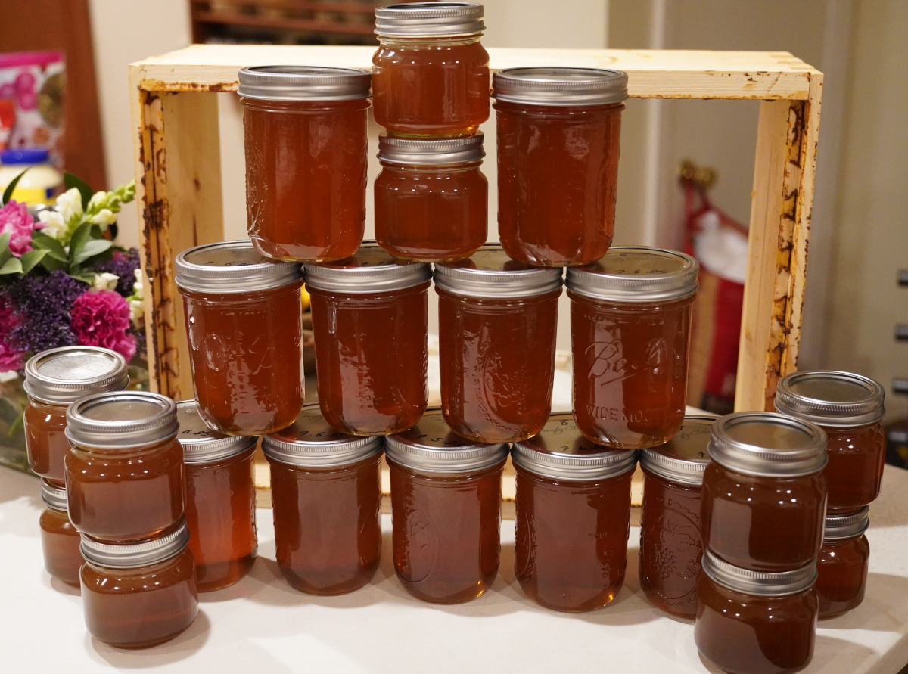
First (ever) honey harvest from Hive One on July 6, 2025. Two gallons, bottled. Used a crush and strain method for this harvest.
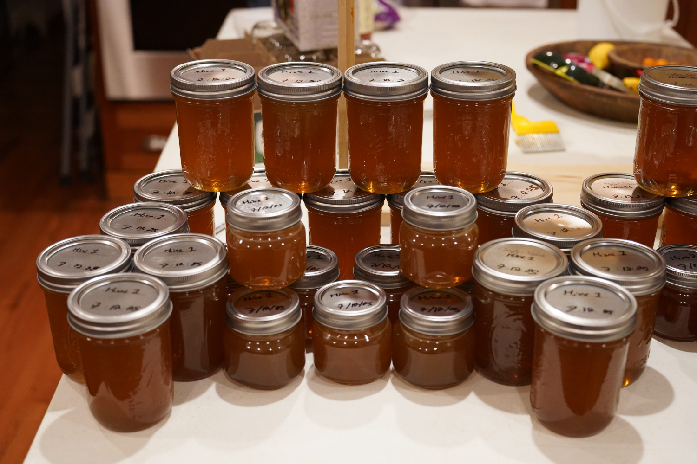
Second honey harvest from Hive One on July 12, 2025. Three gallons, bottled. Borrowed a honey frame spinner to extract honey from the frames with centripetal force for this go around.
While Hive One was working on filling the fifth medium box (and a successful varroa mite treatment), harvest times came on July 6 and July 12, with one medium box removed each time.
An empty medium was added after the second harvest, bringing Hive One back to four total medium boxes.
The two harvested boxes had respectively had around 2 gallons and 3 gallons of honey in them, with the earlier box being higher on the stack and slightly less-capped than the excellent wet-capped frames in the box from July 12.
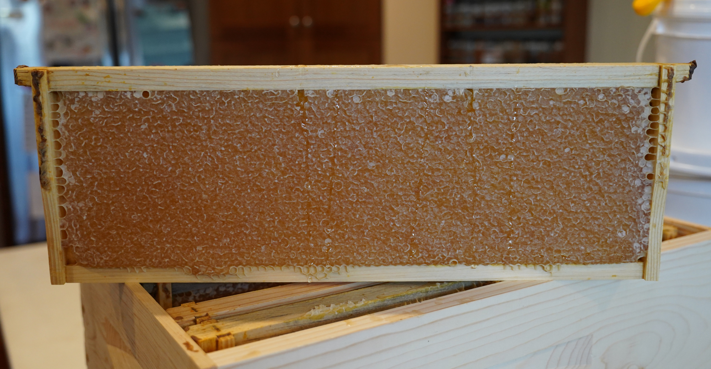
A wet-capped honey frame from Hive One. "Wet" here means the honey is touching the wax cap on the cells, giving it a darker appearance. See the notes on Hive Two for some dry-capped frames. To harvest, these wax caps must be removed, and the honey extracted.
The bees will continue to forage throughout the summer, but as July turns into August, most plants go to seed or fruit instead of producing nectar, which will limit the ability of the bees to stockpile additional stores.
This should alleviate in the Fall, when late-blooming plants like goldenrod start to bloom.
With reduced resources and increased competition, I may decide to reduce the hive entrance to something more defensible.
Hive Two during August 2024. This colony absconded in 2024.
A second swarm finally moved into the bait hive on the morning of June 23, 2024, and was moved to a new hive - Hive Two - next to the first hive. Hive inspection on June 29, 2024. After solid growth through the first half of July, filling 7 of 8 frames in the deep box with comb, honey, and brood, the population of the colony began to decrease. A very sparse brood pattern presented by mid August. The queen was still present as of September but had stopped laying new eggs.
Regular Varroa treatment was done, along with Hive One, and no particular infestation was observed through the season, however the low population of bees eventually led to an infestation of small hive beetles that had to be cleared September 5, 2024, losing 4 frames of drawn comb to the beetle larva. Unfortunately the queen decided to abscond (leave) the morning of September 11, 2024, and bees were observed leaving the hive all at once, presumably try to escape the issues they enountered this season.
After a winter without any bees, hive two is back in action with a split from hive one.
Four deep frames with capped brood and honey were added to the box, along with some medium frames containing around queen cups at various stages of development (two capped, two uncapped).
Four bare foundations were added to the deep to encourage new growth. Half the honey resources (~30lbs) from hive one were donated as well to get them started.
This strategy should start both hives off as new colonies this year.
After several weeks the new queens in both hives should have gone on mating flights to drone congregation areas and started laying eggs.
Until then, not much for the beekeeper to do!
Update - 5/10
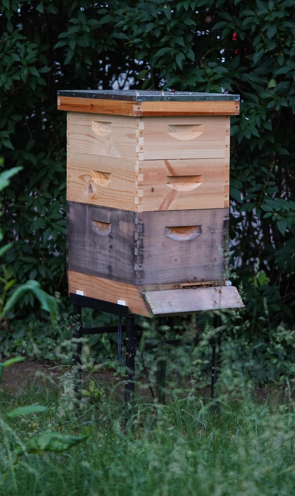
Hive Two with two supers in early June 2025. This colony is now a split from Hive One.
The state of Hive Two was roughly the same as Hive One in full inspection earlier today, with a laying queen and brood in all stages.
Size wise, Hive Two is a bit behind, having grown only a few pounds since the split. The observed brood were even more recently capped and less numerous than Hive One as well.
This is all consistent with not-yet-hatched queens being added to this box, with a side of (lack of) luck on mating flights, putting development a few weeks behind.
It is also likely that Hive One -- in the original spot -- acquired the majority of the foraging-aged bees during the split, allowing it to grow much faster early on.
Hive Two has picked up activity, especially in the recent weeks with fresh brood to feed.
I am waiting for Hive Two to draw more comb on the empty frames in the bottom box, and put on some more weight, before providing additional space above.
Much like Hive One, a Varroa treatment during the brood break between queens revealed and maintained a low mite count in the hive.
Hopefully with fresh bees to take up nurse duties inside the hive, there will be more foraging bees available to start filling boxes with honey!
Update - 6/8
After a few weeks of minimal progress drawing comb, but steadily increasing hive activity, I decided to rearrange frames in the bottom-most deep box on May 31.
The hive had only drawn comb on the inner four of eight total frames, with some minor progress on the next outer-most frames, which could be hurried along by convincing the bees to work on more than two fronts.
Leaving the middle two frames, which had substantial brood, where they were, I swapped the next frames out (heavy with honey) with the frames at the very edge of the box (bare).
I also decided to add a second medium box, as the existing medium was full and capped and bees were creating comb in unwanted locations, despite empty space in the bottom!
Sure enough, by the inspection on June 8, every frame in the bottom box was drawn, along with every frame in the new medium.
There's plenty of space still in this comb for at least one week worth of foraging, but soon a third medium will be needed.
All in all, a good sign for a fresh split!
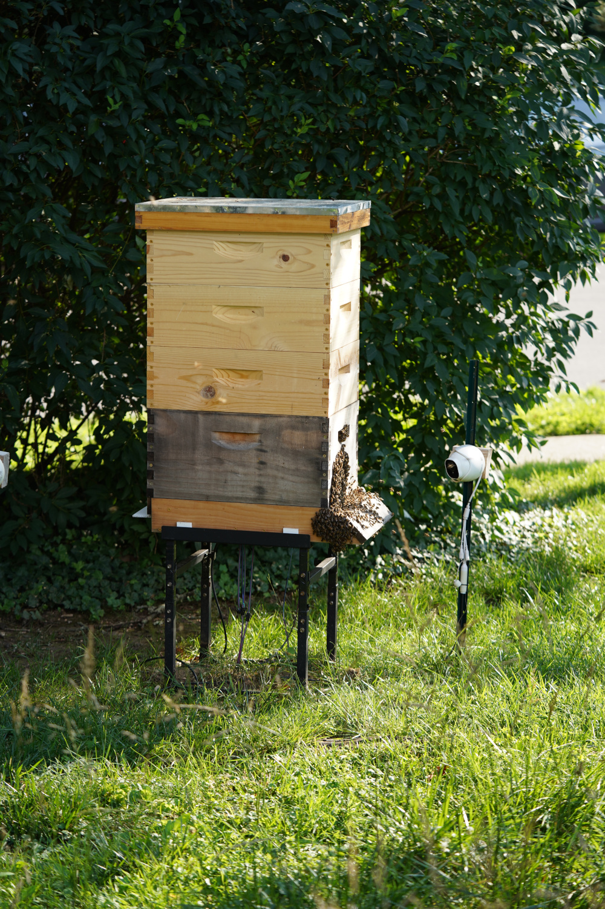
Hive One with 3 nearly full supers in late June 2025. This colony has done exceptionally well this year.
Update - 6/28
Since the last update I've added a third medium box to a steadily growing Hive Two, which the bees have drawn and partially filled.
These frames have pre-waxed plastic foundation from Mann Lake (the premium waxed ones) but I've also been adding about a tenth of a pound of wax per frame right before introducing them to the hives.
This seems to encourage very rapid comb drawing, compared to boxes in the past the bees haven't touched for months.
As the third medium is around 50% full of honey, I will likely add another medium box, to total at four, over the course of the next weeks.
Hive Two continues to be a few weeks behind Hive One, but I'm doing their mite treatments at the same time in an abundance of caution and to minimize the time I spend doing it.
They seem to be OK with having their entrance reducer removed for mite treatment access, but I am considering replacing it once treatment wraps up, or if they start getting harassed.
Right now there's an abundance of blooming things for the bees to harvest, which is their preferred method of acquiring sugars, but as the summer continues, blooms will become scarce until the fall blooming plants kick off.
During that dearth, strong hives may decide to rob honey from hives unable to defend themselves, which can often come down to how big the entrance is relative to the number of bees able to defend.
Update - 7/13
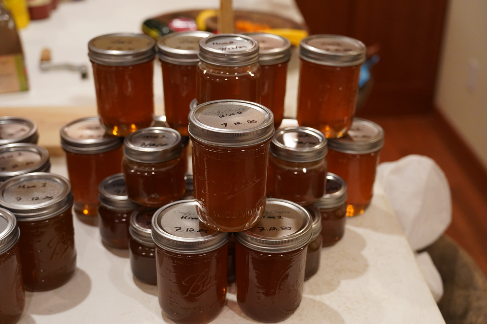
During the second honey harvest on July 12, 2025, I also took one box off of Hive Two to get around 2 gallons of honey from a first-year hive.
A very wet Spring led to Hive Two being able to put on substantially more weight than a first-year colony normally would.
In fairness, I also started this colony with an entire medium box of honey, which is quite a bit more than a wild colony would bring with them.
That leg-up was no longer necessary, and in order to reduce space while keeping the colony occupied, I decided to remove one fully capped medium box and harvest the honey.
Unlike the wet-capped honey found in Hive One, for whatever mysterious reason, Hive Two likes to dry-cap honey, resulting in the picturesque honey frames like the one below.
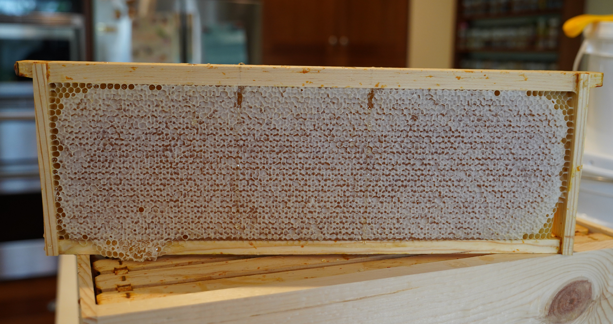
A dry-capped honey frame from Hive Two. "Dry" here means the honey is not touching the wax cap on the cells, making it appear white, unlike the more honey-colored frames of Hive One. These are more desired, for some reason.
During the harvest, I noticed quite a few hive beetles both in Hive Two and Hive One, but I suspect that is primarily due to the time of year and not the health of the hives, as the bees had them corralled unless I distracted the bees.
It is, however, easier for the beetles to get in with the entrances of the hive open, which might the reducer should go back on.
As mentioned with Hive One, I'll wait to see if nectar availability drops off substantially before changing the entrances, but it may be a useful data point to leave one on and one off to see how it impacts the hive beetle population.
There is still a decent amount of bearding (bees clustering on the outside of the hive) during hot days, which indicates a more-open hive with a big entrance is likely beneficial from a ventilation perspective.
Astrophotography
If you were walking around the neighborhood on a clear night, you might have seen me out with my telescope and been pointed to the QR code for the BeeCam to find pictures of deep space. You're in the right place!
I keep a photo album of completed images updated for public viewing and have recently written a blog post on some of my best images, which are pictured on the banner above, and another on images of distant galaxies.
Besides the telescope, you're curious about the antennas, check out the Earth. Enjoy!